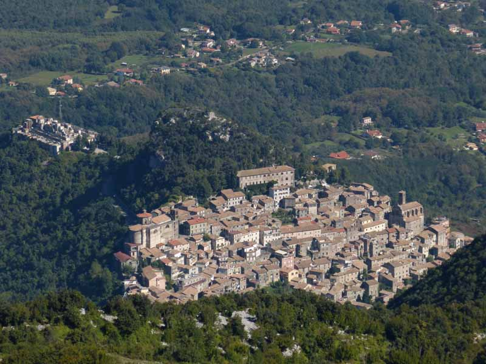
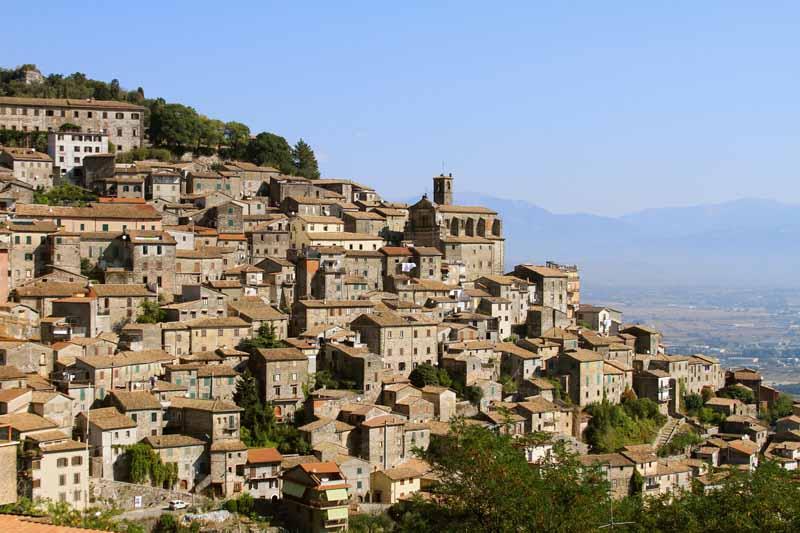
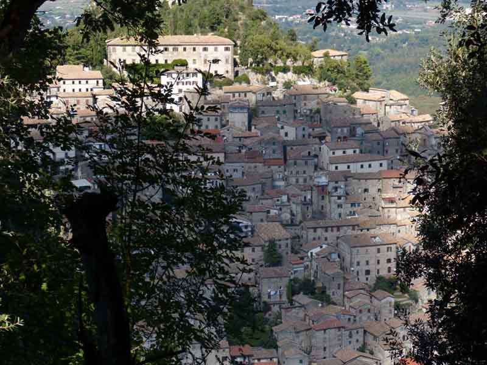
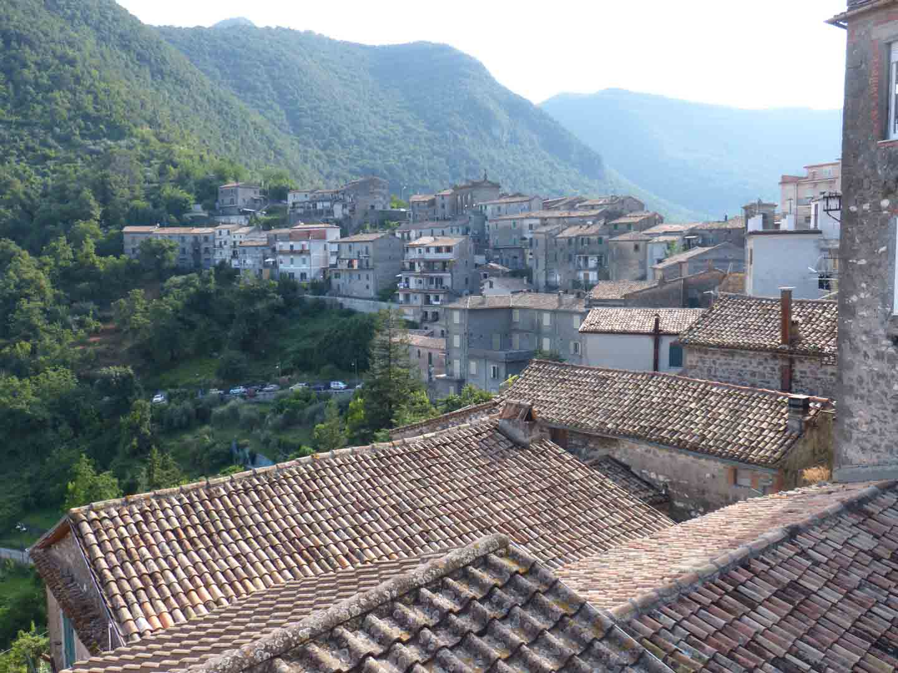

|  |
|  |
|  |
|  |
I was born in Patrica (Frosinone) about 1500 feet above the sea level which is located just 65 miles south of Rome in Italy.
We learned from our mother the art of cooking, she was a good cook with
the skills she learned from her mother. She was in the kitchen all the time
preparing food, baking bread, cookies and all the goodies. The kitchen is the
heart of the Italian home, where the members of the family exchange ideas, news
good or bad. This is where guests gather and we entertain. The kitchen is where
the women spent most of their time planning and preparing meals for the family.
When we asked our mother to measure the quantity in the preparation of a dish
she would reply "un pizzico" (pinch)," pieno di mano" (hand full), and "con occhi"
(with the eyes). She would judge simply by feeling if the mixture was right.
When a guest came to visit, food was ready in a matter of minutes and my mother always
said to "mangia mangia" (eat eat). Food in the Italian family is an expression of love.
She was pushing for more all the time, little more, little more, it is good mangia.
Our family makes our own tomato paste, tomato puree, sausages, prociutto, olive oil,
wine etc. I learned how to cook when I was in my teens. My aunt owned a pizzeria in this
little town in the Lepini Mountains (Patrica) it was open only in the summer, the tourist
time.
So my passion for the restaurant was there all the time.
I immigrated to the United States- to Michigan when I was 19 years old, with my mother and father.
We moved in with my uncle, my mother’s brother. He had 3 sons and one was the owner
of an Italian Restaurant. I went to work with my cousin at his restaurant, Como Pizzeria;
and learned the business. I also worked in the factory (GM), like most of the Italians.
I worked there for three years.
During the same time my brother and sister immigrated to the USA.
We opened our first restaurant in 1971 and named it the Marina
Pizzeria Restaurant.
Now I have my own family, 2 sons, gemelli (twins), a grandson
and a granddaughter with another on the way! My grandson Caleb tells me he wants
to be a chef like Emiril. He has books about cooking and his own utensils.
For Christmas I built him a stove and refrigerator so he could play chef.
My wife is a good cook but she likes it when I cook all my Italian food.
The ingredients are simple, olive oil, garlic, and some are even from
my own garden, like basil, aromatic herbs vegetable etc.
Buon Appetito - Bruno